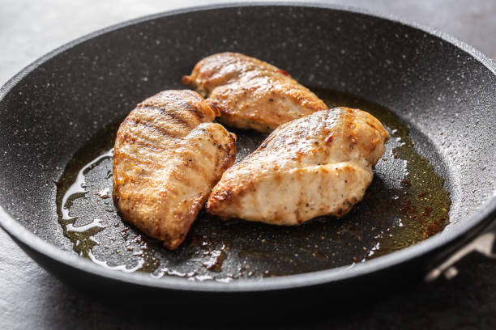
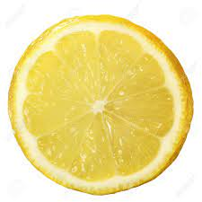

Ensalada de Pollo a la Parrilla con Aderezo de Limón
Ingredientes:
- 2 pechugas de pollo
- Sal y pimienta al gusto
- 1 cucharada de aceite de oliva
- Mezcla de lechugas frescas
- Tomates cherry, cortados por la mitad
- Pepino, en rodajas
- Queso feta desmenuzado
- Aderezo de limón (puedes comprarlo o hacerlo mezclando jugo de limón, aceite de oliva, ajo picado, sal y pimienta)
Paso 1: Cocinar el Pollo

Sazona las pechugas de pollo con sal y pimienta. Cocina a la parrilla o en una sartén con aceite de oliva hasta que estén doradas y cocidas por completo.
Paso 2: Preparar los Ingredientes
Corta el pollo en tiras. En un tazón grande, mezcla las lechugas, tomates cherry, pepino y queso feta. Agrega las tiras de pollo.
Paso 3: Servir con Aderezo de Limón

Sirve la ensalada y rocía con el aderezo de limón. ¡Listo para disfrutar!